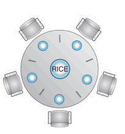
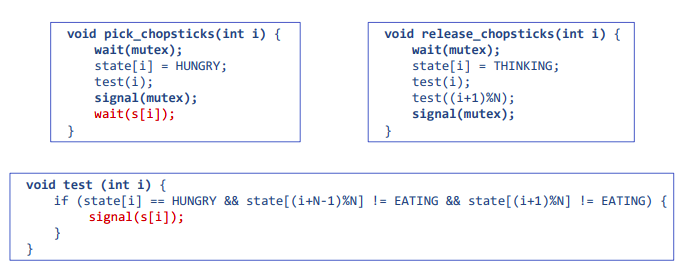

Programacion en sistemas operativos
La programación en sistemas operativos implica el desarrollo de software que interactúa directamente con el kernel y otros componentes del sistema operativo para realizar tareas específicas.
Aspectos clave
- Lenguajes de Programación:
Los sistemas operativos suelen estar escritos en lenguajes de programación de bajo nivel, como C o ensamblador, para garantizar un control directo sobre el hardware.
- Desarrollo del Kernel:
La parte central de un sistema operativo, el kernel, es el componente principal que gestiona los recursos del sistema. Los desarrolladores de sistemas operativos trabajan en el desarrollo y mantenimiento del kernel.
- Drivers de Dispositivos:
Se desarrollan controladores de dispositivos para permitir que el sistema operativo interactúe con hardware específico, como controladores de impresoras, tarjetas de red, tarjetas gráficas, etc.
- Programación de Sistemas:
Implica trabajar en componentes fundamentales del sistema operativo, como la gestión de memoria, la planificación de procesos, la gestión de archivos y sistemas de archivos, la comunicación entre procesos, etc.
- Programación de Sistemas de Archivos:
Involucra el diseño e implementación de sistemas de archivos y la escritura de código para realizar operaciones de lectura y escritura en el almacenamiento.
- Programación de Servicios del Sistema:
Desarrollo de servicios esenciales, como servicios de red, servicios de seguridad y servicios de gestión de energía.
- Programación Concurrente y Multihilo:
En sistemas operativos modernos, la programación concurrente y multihilo es fundamental para aprovechar al máximo la capacidad de la CPU y gestionar múltiples procesos de manera eficiente.
- Depuración y Optimización:
Dada la complejidad de los sistemas operativos, los desarrolladores también se ocupan de la depuración y optimización del código para garantizar un rendimiento eficiente y resolver problemas.
Problemas clásicos de sincronización
Dining-Philosophers Problem
| Filósofo | Estado |
|---|---|
| Filósofo 1 | Pensando |
| Filósofo 2 | Pensando |
| Filósofo 3 | Pensando |
| Filósofo 4 | Pensando |
| Filósofo 5 | Pensando |
En una mesa redonda, cinco filósofos se sientan alternando entre pensar y comer. No se relacionan directamente con sus vecinos. De vez en cuando, intentan coger dos palillos (uno a la vez) para comer del cuenco. Necesitan ambos palillos para comer y los sueltan cuando terminan.
